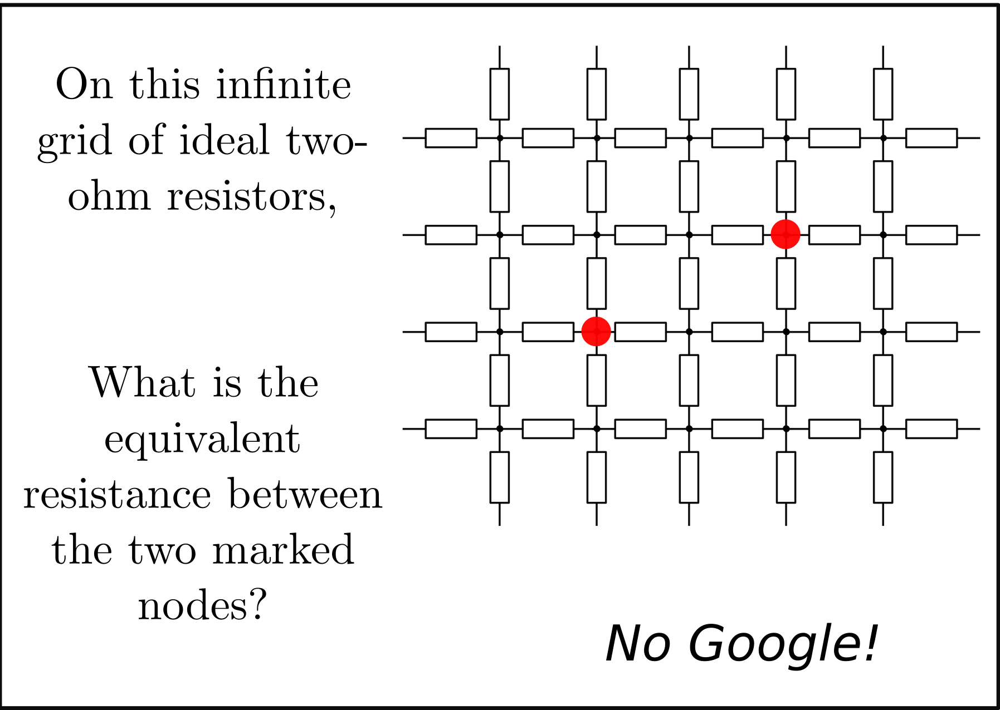

nerd-sniping-postcards
Nerd sniping was popularised in xkcd #356.

I saw this, thought about the infinute resitor problem, gave up and read the solution.
I then thought "I have friends, they like postcards, they also like hard problems." so I loaded up inskape and made a card with this problem on it and sent it to my friend.
I also realised I have friends who aren't eletrical engineers, but are computer scientists, they would also love a postcard from me with a difficult problem on it. So why not send it to them?
Thus nerd-sniping-cards was born

How do I use them?
- First think of someone who has done you wrong.
- Download and print the files onto some nice 230gsm card. You can either print the PNG files or the SVG files from inkscape.
- Turn it over, put on the address and a stamp, and a little message, something like Remember to show your working
- Post it to them
n.b. I'm from Britian and live in Russia. check the postal rules in your country about sending postcards.